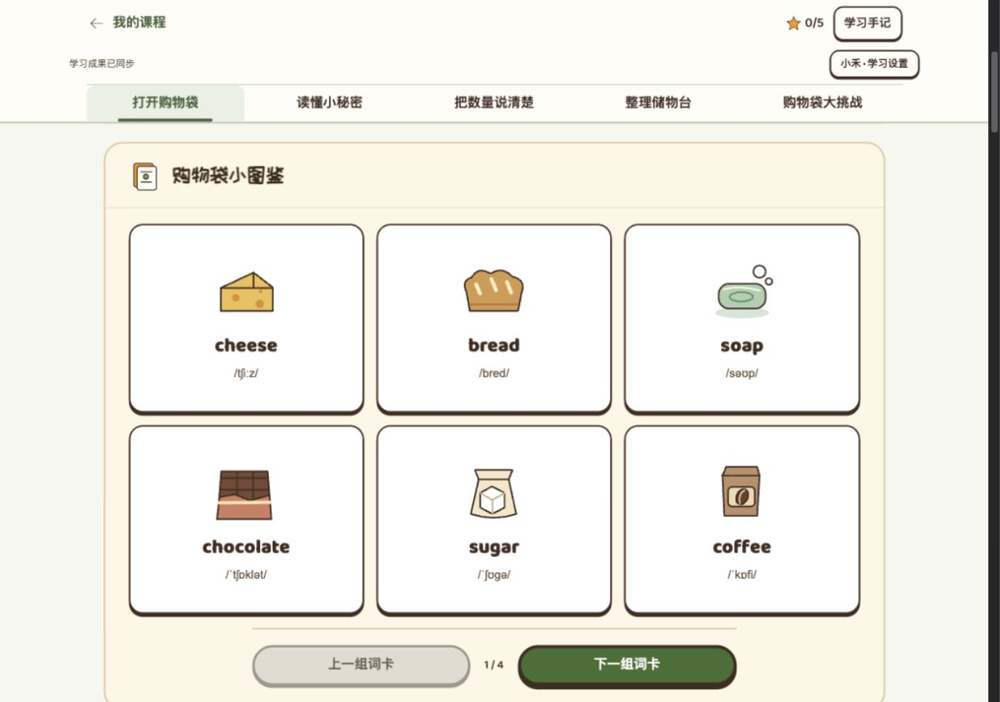
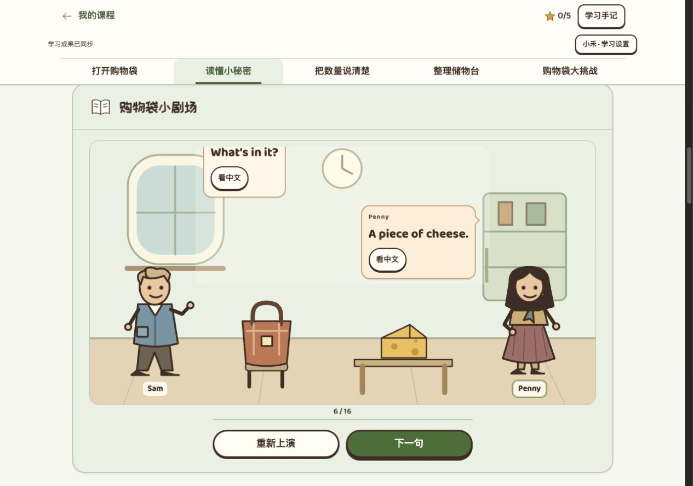
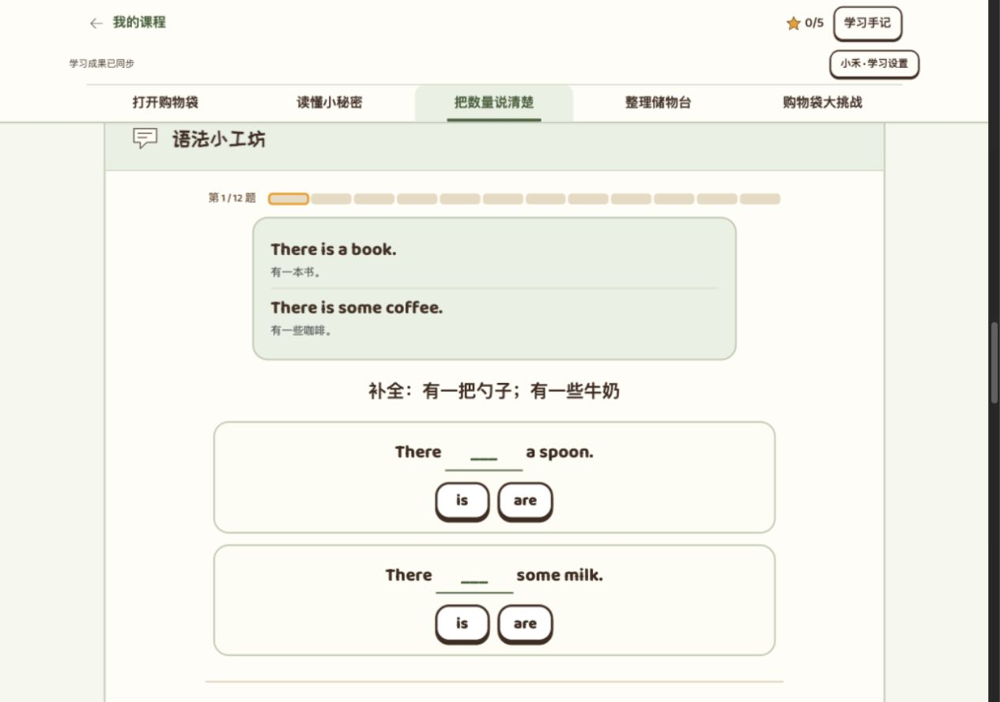
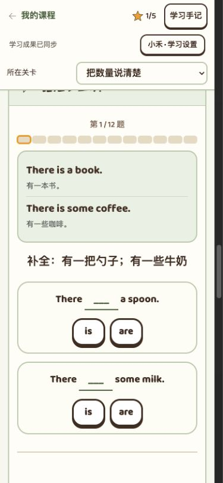
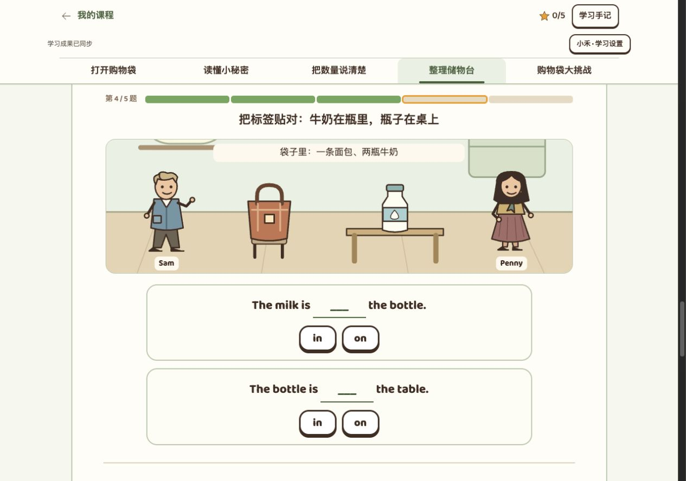
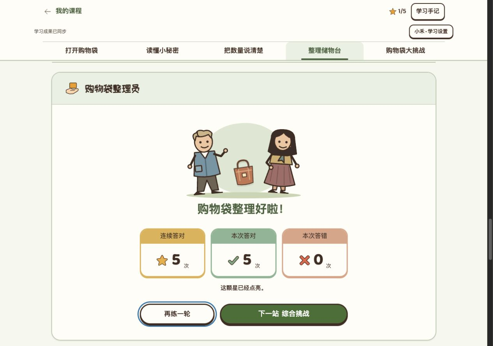
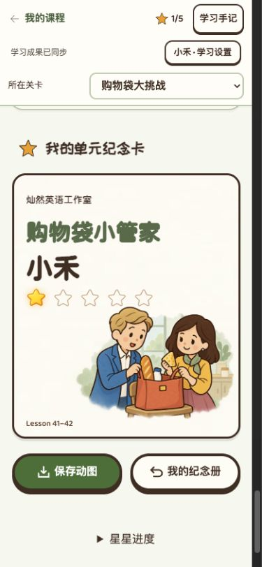

2026-10-12 · 当前 debug-grammar-v2 本地版本 · 依据统一标准 v1.34
Lesson 41–42：基础齐全，下一步把题目、故事与纪念卡连起来
当前五个答题区共 43 题（7 / 5 / 12 / 5 / 14），五颗星的结构可以保留。优先替换薄弱题目、修好物品状态衔接、统一角色与道具，不以增加题量或装饰作为主要优化。
本次是只读审视。未修改课程、统一标准或正式学生记录；未提交、推送、部署。截图来自本次独立本地学生“小禾”。实际完成应用区 5 题和一次获星；其他内容通过题稿、教材与部分页面核对，尚未做全课回归、教师／儿童试用或手机微信验收。
| 步骤 | 现状 | 建议 |
|---|
| 1 · 图鉴与词汇 | 基本合理 | 保留大图、英文、音标；量词结合具体物品认识。 |
| 2 · 故事与理解 | 内容可靠，画面偏静态 | 用少量关键动作呈现放袋、取物与交谈，保持原文不变。 |
| 3 · 语法小工坊 | 目标覆盖较好，示范偏文字化 | 加入数量可见的对比；每个核心目标逐步撤去帮助。 |
| 4 · 情境应用 | 物品状态衔接需优先修正 | 五题组成一次连续整理，明确搬动、增减和位置。 |
| 5 · 综合挑战 | 广度足够，独立运用仍可加强 | 补 loaves 独立检验，减少仅换名词的重做，撤去方法提示。 |
| 6 · 结算与纪念卡 | 本次获星流程正常，视觉尚待确认 | 保留三卡和奖励规则，统一角色／袋子、调整标题留白与完成图。 |
1 · 图鉴与词汇 保留基础
20 张词卡正面保留图、英文、音标；以物品与量词建立联系是合理的起点。初学阶段允许图像支持，后续要靠英文材料核对，而不是所有题都只看图就能完成。

当前图鉴首组。这里没有发现必须重做的整体布局问题；本次未逐张操作全部词卡。
2 · 故事与理解 改进动作与物品关系
题稿保留 16 句原文；Not very.、重量、说话人 me 的考察有价值。Penny 说不是给自己，不能推出一定给 Sam，现有题目正确保留了这个边界。
画面里人物多为固定站姿，道具出现后缺少取出、交接或查看的动作。建议增加“放到椅子—查看袋内—拿出物品—对话收尾”几个关键状态，不添加伪装成教材原文的新对白。人物应看向正在讨论的物品，袋子造型全程一致。

本次阅读到第 6 / 16 句。人物与乳酪之间的动作联系仍弱；完整历史对白的机制可保留。
3 · 语法小工坊 加强从看懂到会用
12 题已涵盖 there be、量词及其复数、a / some / any、one / some 等。不是没有语法，而是示范较多采用“文字例句在上，填空在下”。
- 第一组：some milk 与 one bottle / two bottles 的对比，让孩子看清数的是牛奶还是瓶子，再选 is / are。
- 第二组：量词 + of + 物品；在数量变化中认识 bars、bottles、loaves，随后撤去例子独立表达。
- 第三组：看袋中实际物品，练陈述、询问、否定及 one / some；并列清单的第一项规则作为较后的短对比。
每一组都要有“短示范—马上练—无示范再用”，不把最后一道独立拼句当成全部语法目标的独立检验。

桌面当前第一题。示范与题目答案错开是好的，但可通过物品数量对比更直观地解释规则。

390 × 844 浏览器视口：检查按钮落在首屏下方。建议压缩示范和填空容器的高度；这不是已经证明的点击故障。触控尺寸、完整键盘路径和真实手机仍待验。
4 · 购物袋整理员 优先修正连续情境
前面把一条面包、两瓶牛奶装进袋子；第 4 题桌上出现一瓶牛奶，袋内清单仍是两瓶；第 5 题又转为桌上的乳酪。题目单独可答，但没有交代这些物品如何移动或出现，削弱了“同一次整理”的真实感。
推荐五题连续过程：装入面包 → 装入两瓶牛奶 → 检查缺少的肥皂 → 按英文要求把一瓶牛奶从袋里移到桌上 → 根据最后的场景填写记录。移动后袋里与桌上各一瓶；选择未检查时不改变场景。
最后一题界面通用的“翻译这句话”也应换为符合当下动作的任务提示，例如“替 Penny 记下整理结果”。

这不是已经证明的“同一瓶被复制”错误；明确的问题是缺少移动或新增交代，读者无法跟踪物品状态。
5 · 综合挑战 补独立检验，保留必要复测
依据完整题稿逐题核对，14 题的范围较广，但存在三处值得调整的地方：
- loaf → loaves：工坊明确教过，综合题只考了 singular loaf 和 regular bottles，未独立检验 loaves。建议替换一道重复量词题。
- 必要复测与换词重做分开：some / a、any 问句、one / some 等在撤去示范后复测有价值，不应全部删除。但可替换部分只换物品名称的题，用新清单同时判断数量、位置或否定信息。
- 撤去方法提示：综合题“根据第一项补全”已经告诉孩子采用哪条规则。工坊可以这么教，综合挑战应让孩子自己识别。
综合题让 Sam 说 me，而理解题让 Penny 说 me，这是有意义的说话人对比，应保留。建议先维持现有五区与总题量，用替换提高质量；如需增减题，单独说明教学依据。
本步骤基于 content.js 的全部 14 道综合题和教材核对；本次没有逐题操作综合挑战，因此不将题稿审视算作完整运行验收。复数问句／否定句出现在同步导学同页练习，可作为小范围补充候选；若采用，须先教学，再考察，不能直接加进考试。
6 · 结算与纪念卡 保留规则，统一故事身份
以下三张截图来自同一个独立学生、同一桌面视口、0 星状态。点击可查看原尺寸。41–42 当前 v3 是待确认稿，不是新的全站样板。
Lesson 1–2 · 已认可基线
Lesson 3–4 · 已认可基线
Lesson 41–42 · 当前 v3
- 标题空间：“购物袋小管家”六字较长，已经贴近 Sam 的头部。先调整字号与安全留白，不靠缩小全部人物解决。
- 角色身份：舞台中的 Sam 是简化口袋上衣，卡中是西装翻领；Penny 的头发轮廓差异也明显。统一服装结构、发型轮廓、主要配色，再允许动作和精细度变化。
- 关键道具：舞台是细长棕色袋，卡面是较宽的橙色手提袋。应确定同一袋形、提手与扣饰，贯穿故事、练习、结果和纪念卡。
- 故事瞬间：保留 Sam 扶袋、Penny 拿出乳酪的中近景方向，让脸、手、视线和道具关系更清楚。靠近已认可卡片的圆润棕色线条与柔和纸色，背景退后，不额外堆徽章和金边。
- 环节完成插画：现在袋子悬浮在两人之间，不像“整理好了”。可让袋子落在椅子或桌面，露出少量整理成果；三张统计卡及五颗星规则保持不变。

本次实际完成 5 题零错，获一颗星，关闭悬浮卡后进入三卡结算。该路径没有复现纪念卡自行消失；不能据此替代全部动画场景验收。

390 × 844 当前一星卡面未见明显裁切。长姓名、五颗星、纪念册、真实 GIF 与手机微信保存仍需单独验证。
建议实施顺序与教材依据
先题稿与物品状态 → 再人物／袋子统一 → 最后排版与完整回归。保留五区五颗星、固定三卡、原文和已经正确的教学边界。不能因本次纯视觉修改清空旧记录或要求重新争星；若题目改变，按现行标准分别处理新增题、作答和旧收藏。
核对依据：统一设计标准 v1.34；《新概念英语1 同步导学》Grammar 纸页 76 / PDF 90；《外研社新概念英语智慧版1》纸页 83–85 / PDF 116–118。同步导学中 loaf 的中文写法与课本存在差异，沿用课本及当前课程的“一条面包”。
单元旧设计文档首段仍引用 v1.32；后续实施时更新为当前标准，并补齐“依据—示范—练习—综合”对应表。本报告只列优化建议，不代表建议已获用户确认或已经实施。